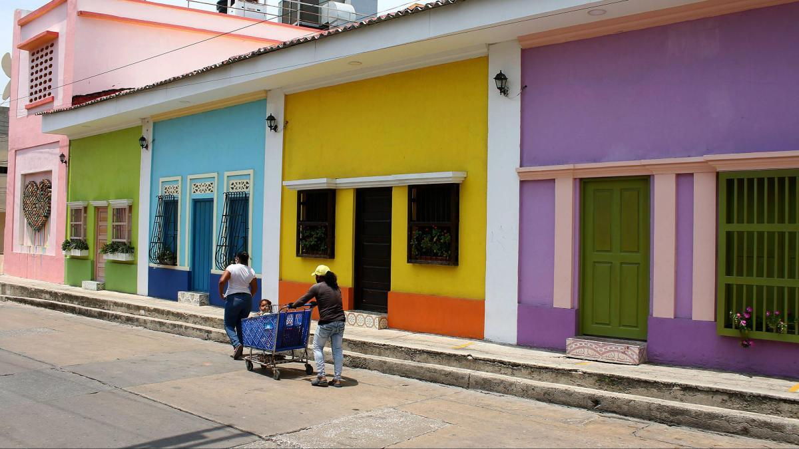
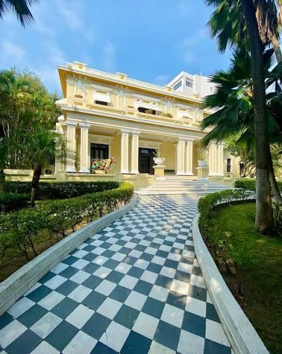
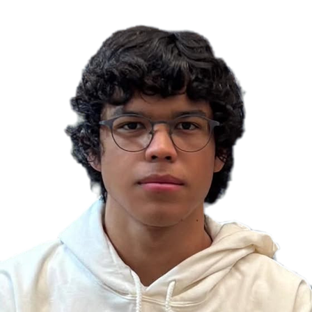
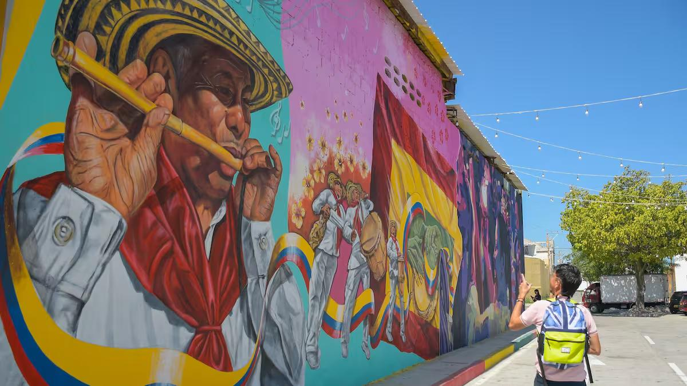
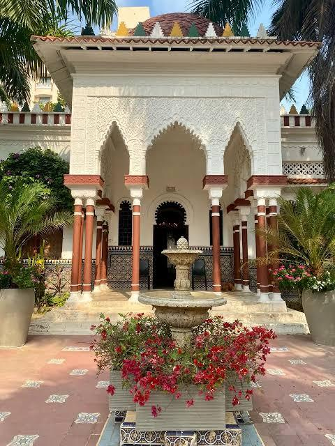
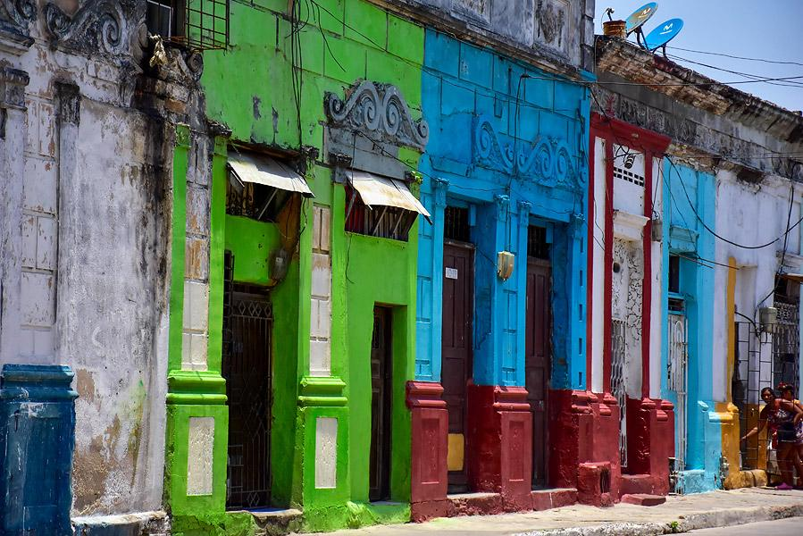
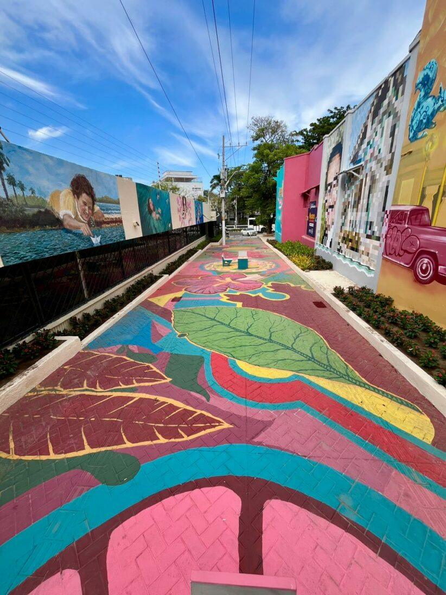
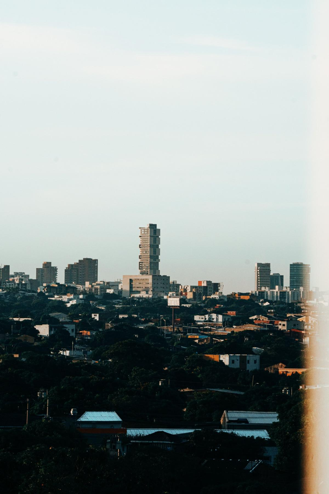

Somos historiadores. Investigamos el pasado y queremos que lo vivas más allá de la academia. Algo nuevo está por llegar.
LO QUE VIENE
Estamos preparando una manera distinta de encontrarte con el pasado de los lugares que habitas y visitas.
Archivos, documentos y voces que esperan ser escuchados.
Muy pronto te contamos cómo.
Tienen historias que aún no te han contado.
CREANDOooo

PROTOTIPO EN CONSTRUCCIÓN
Todavía no podemos contarte todo, pero falta poco.
Ideando, investigando, trabajando, conectando...
QUIÉNES SOMOS
Investigamos la historia y queremos que sea una experiencia más allá de la academia: cercana, viva y al alcance de todos.
Cofundador · Dirección académica y estratégica
Historiador y candidato doctoral en Historia Contemporánea (Universidad Autónoma de Madrid). Docente universitario con más de una década de experiencia en la Universidad del Atlántico y Uninorte, creador del Laboratorio de Historia de la Universidad del Atlántico, con trayectoria en investigación, extensión cultural, medios y servicios culturales.

Cofundador · Innovación y desarrollo
Estudiante del programa de Historia, con espíritu innovador y comprometido con llevar la historia a todas las personas. Motor creativo del proyecto y puente entre la academia y las nuevas generaciones.




CADA LUGAR
MUCHAShistorias
TIENDA
Mientras llega lo que estamos construyendo, ya puedes llevar nuestra marca.

“La historia es el recurso más poderoso para entender quiénes somos y hacia dónde vamos.”
Muy pronto te contaremos más. Escríbenos y te avisamos primero. Si eres una institución o un aliado interesado, también queremos conversar.
¿Qué te gustaría?
Elige una opción y se abrirá tu correo con el mensaje listo para enviar.
Enterarme del lanzamiento→ Proponer una alianza institucional→ Escribir a info@culturalhistorywalk.com